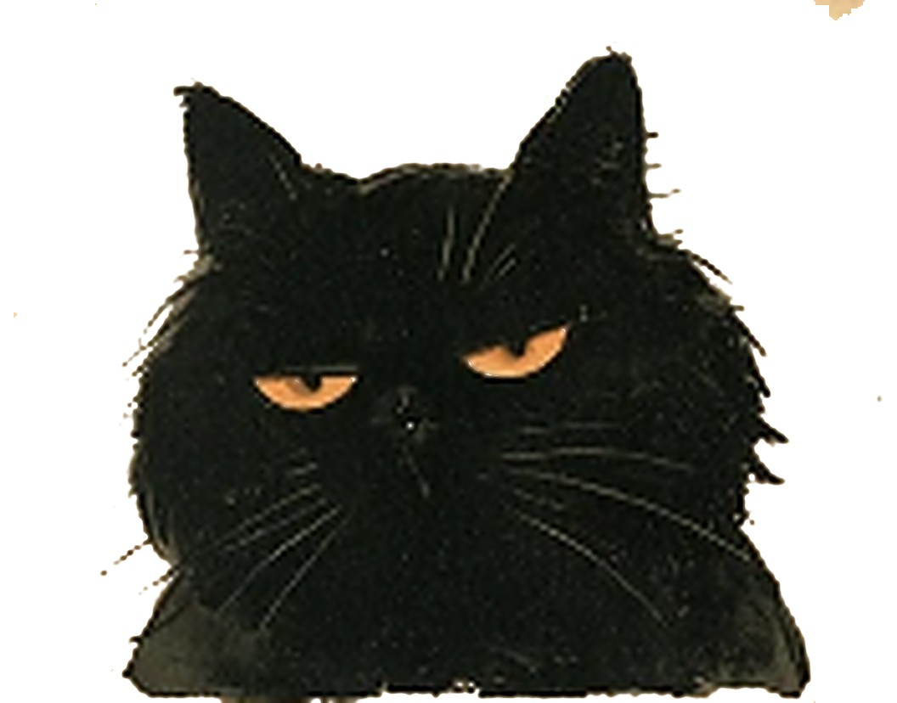
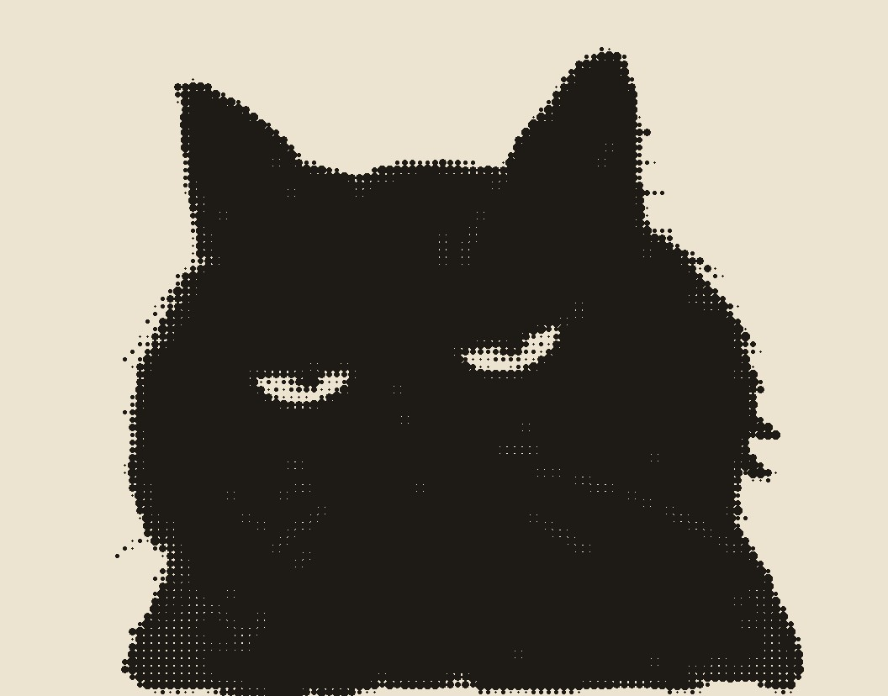

사람 눈
심묘한 산채京城 · 八景
18991937
手配 第二六八號
京城 印刷所 屆出


268 ㄱ까만 고양이 한 마리. 인쇄소에서 활자 「ㄱ」을 물고 달아남.
글을 모르니 읽고 돌려줄 리 없음. 보신 분은 알려 주시오.
그 고양이가 지나간 자리마다, 경성의 글자에서 ㄱ이 빠졌다.
고양이 눈으로 한 번 봐 주면, 빠진 ㄱ이 하나씩 돌아온다.
그림은 재현입니다 · 장소와 연도와 사실은 기록을 따랐습니다
사람 눈